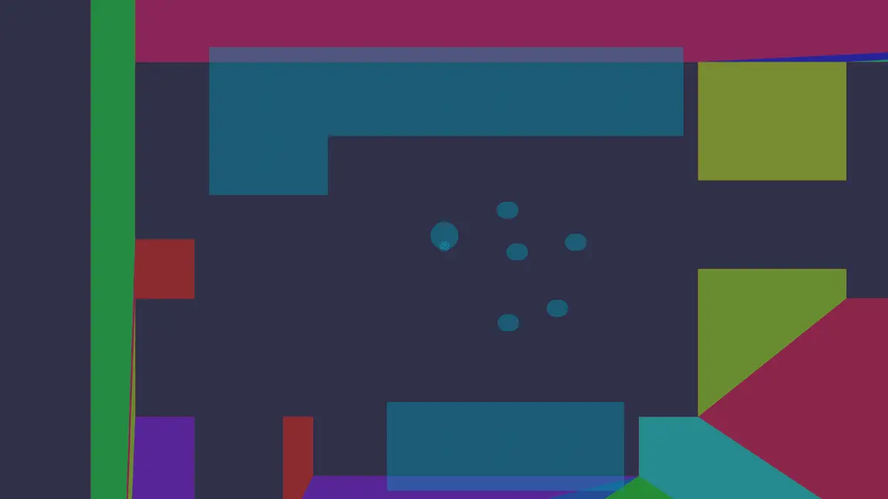
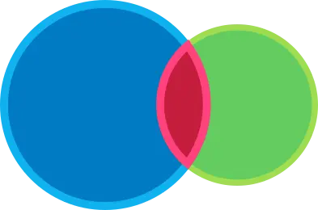
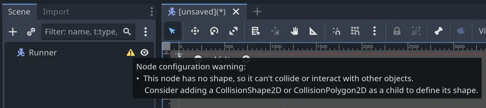

L2 Character Controller
M4 강의인 To Space and Beyond 에서는 8방향으로 움직일 수 있고 영역을 감지할 수 있는 우주선을 만들었습니다. 하지만 이 우주선은 어떤 것에도 부딪힐 필요가 없었지요. 이렇게 작동하는 게임은 거의 없습니다!
게임에는 장애물, 부딪힐 수 있는 요소들, 그리고 움직임을 제한할 벽이 필요합니다. 그렇지 않으면 레벨 디자인 자체가 불가능해집니다!
이번 강의에서는 CharacterBody2D 노드를 사용하여 캐릭터를 위한 탑다운 방식의 컨트롤러를 직접 코딩해보시게 됩니다. 우리 캐릭터는 M4에서 만든 우주선처럼 움직이지만, 몇 강의 뒤에 벽과 장애물을 추가하게 되면 그 차이가 분명히 드러날 것입니다.
이번 강의에서는 다음과 같은 내용을 배우시게 됩니다:
-
탑다운 방식의 캐릭터 컨트롤러 만들기
-
캐릭터를 여러 방향으로 움직이기
-
CharacterBody2D 노드가 무엇이며, 이를 어떻게 사용하는지 학습하기
우선, 충돌(collision) 에 대해 이야기해보겠습니다.
P1 What the computer sees
게임에서 캐릭터를 움직일 때는 보통 두 개의 평행한 객체가 함께 움직입니다. 하나는 플레이어가 보게 되는 시각적 레이어, 다른 하나는 컴퓨터가 플레이어가 이동할 수 있는지 없는지를 판단하는 물리 레이어입니다. 예를 들어, 플레이어가 보는 화면이 다음과 같다고 가정해봅시다:

컴퓨터가 보는 화면은 다음과 같을 수 있습니다:

물리 레이어는 일반적으로 원이나 사각형과 같은 기하학적 도형들로 구성되어 있어, 컴퓨터가 Collisions을 효율적으로 감지할 수 있게 해줍니다.
충돌이란 두 개의 기하학적 도형이 겹쳐졌을 때 발생합니다. 이 경우, 물리 엔진은 도형들이 더 이상 겹치지 않도록 서로 밀어내는 처리를 합니다. 이 연산은 렌더링 전에 한 프레임 안에 처리되므로, 플레이어는 이를 시각적으로 인식하지 못합니다. 예를 들어, 플레이어가 벽에 부딪히면 캐릭터가 벽에서 멈춘 것처럼 보이게 됩니다.
개발자인 우리는, 게임의 물리 레이어와 시각적 레이어가 잘 맞아떨어지는 듯한 착각을 줄 수 있는 도형들 을 찾아내는 역할을 하게 됩니다.
컴퓨터는 왜 충돌을 감지할 때 기하학적 도형을 사용할까요?
컴퓨터가 충돌을 감지할 때 기하학적 도형을 사용하는 이유는 성능 때문 입니다.
가장 간단한 도형인 원(circle) 을 예로 들어보겠습니다. 두 원이 겹쳐지는지를 알아내기 위해서는 각 원의 중심 좌표와 반지름만 알면 됩니다. 두 중심 사이의 거리가 반지름의 합보다 작다면, 두 원은 겹친 것입니다.

이것은 컴퓨터가 매우 빠르게 계산할 수 있는 간단한 공식입니다.
그런데 만약 충돌 감지를 위해 스프라이트 자체 를 사용한다고 상상해보세요. 스프라이트는 수만 개에서 수십만 개의 픽셀로 이루어져 있을 수 있습니다. 두 객체가 충돌했는지 알아내려면, 한 스프라이트의 외곽에 있는 거의 모든 픽셀을 다른 객체의 픽셀과 비교해야 합니다. 이는 엄청난 양의 연산이 필요합니다! 반면 기하학적 도형을 사용하는 방식은 훨씬 빠릅니다.
또 다른 이유는, 단순한 기하학적 도형이 더 부드러운 상호작용을 만들어내기 때문 입니다. 예를 들어, 원 형태는 벽이나 경사면을 따라 자연스럽게 미끄러지듯 움직일 수 있지만, 픽셀 단위의 완벽한 충돌 감지는 각이 많은 구조로 인해 객체가 떨리거나 끼어 있는 것처럼 보일 수 있습니다.
좋습니다. 그러니까 게임 엔진은 객체들이 겹쳤는지를 감지하고 충돌을 처리하기 위해 물리 도형(physics shapes) 을 사용합니다. 그렇다면 Godot에서는 이러한 충돌을 어떻게 설정할 수 있을까요? 플레이어가 조작하는 캐릭터의 경우, CharacterBody2D 노드를 사용할 수 있습니다.
P2 The CharacterBody2D node
Godot에는 게임 세계와 충돌해야 하는 캐릭터를 위해 특별히 설계된 노드인 CharacterBody2D가 있습니다. 이 노드는 캐릭터를 움직이고 충돌을 처리하기 위한 다양한 기능을 갖추고 있으며, move_and_slide() 함수는 많은 기술적인 세부 사항을 자동으로 처리해줍니다. 이 함수 덕분에 캐릭터는 경사면이나 벽에 부딪힐 때도 부드럽게 움직일 수 있습니다.
CharacterBody2D는 2D 게임에서 플레이어 캐릭터를 구현할 때 아마도 가장 일반적으로 사용되는 노드입니다. 이 노드를 사용하면 The Binding of Isaac , Celeste , Dead Cells 같은 게임에서 볼 수 있는 캐릭터나 몬스터도 구현할 수 있습니다.
다른 종류의 물리 노드는 무엇이 있을까요?
대부분의 게임 엔진과 마찬가지로, Godot에는 네 가지 주요 물리 노드가 있습니다:
-
Area2D 노드 는 다른 물리 노드와의 겹침(overlap)을 감지하지만 충돌은 처리하지 않습니다. 특정 영역에 진입했는지 감지하거나, 상호작용을 유발하거나, 아이템을 습득하거나, 총알을 발사할 때 등에 사용됩니다.
-
CharacterBody2D 노드는 충돌을 감지하고, 울퉁불퉁한 지형에서도 캐릭터를 부드럽게 움직일 수 있게 해줍니다. 특수한 함수를 통해 움직임을 정밀하게 제어할 수 있어, 캐릭터 컨트롤러를 만드는 데 매우 적합합니다. 캐릭터, 차량, 적, 그 외 이동이 필요한 오브젝트에 잘 어울립니다.
-
RigidBody2D 노드는 현실 세계의 물리 현상을 시뮬레이션하는 오브젝트입니다. 충돌하고, 튕기고, 떨어지고 등 다양한 물리 반응을 보여줍니다. 힘(force), 충격(impulse) 등을 설정해야 하므로 다른 노드보다 다루기 까다롭습니다. 공, 나무 상자, 파편처럼 현실적인 반응이 필요한 오브젝트에 적합하며, Angry Birds 같은 게임의 새나 차량에도 사용됩니다.
-
StaticBody2D 노드는 CharacterBody2D나 RigidBody2D 노드의 정적인 장애물 역할을 합니다. 움직이지 않는 벽이나 바닥 등에 사용할 수 있습니다. 움직이는 발판이나 장애물처럼 플레이어나 적을 막아야 하는 움직이는 오브젝트를 만들고 싶다면, 이 노드의 변형인 AnimatableBody2D 노드를 사용하시면 됩니다.
이번 모듈에서는 CharacterBody2D를 사용해 캐릭터 컨트롤러를 만들고, StaticBody2D를 사용해 벽을 구현할 예정입니다.
그렇다면 캐릭터에는 보통 CharacterBody2D 노드를 사용하는데, 왜 이전에는 Area2D 노드를 사용했을까요?
아하! 그건 모두 하나의 복선이었습니다!
초반에 Area2D 노드를 사용했던 이유는, 엔티티 간의 간단한 물리 상호작용을 소개하기 위함이었습니다. M4에서 우주선을 Area2D 노드로 만든 것은 이후 두 모듈에서 소개된 수집 아이템과 보물 상자를 준비하기 위한 과정이었습니다. 또한, 캐릭터 컨트롤러나 충돌 설정과 같은 약간의 복잡함 없이도 물리 상호작용과 속도 개념을 소개할 수 있는 좋은 방법이기도 했습니다.
이러한 흐름 덕분에 이제 CharacterBody2D 노드를 배우는 것이 더 쉬워질 것이며, 캐릭터 애니메이션과 보는 방향을 다루는 방법도 자연스럽게 배울 수 있게 됩니다. 그리고 실제로 여러분은 종종 움직이는 영역(Area)을 만들거나, 플레이어 캐릭터에 Area를 붙여 함께 움직이게 해야 할 때가 많기 때문에, 지금까지 배운 내용은 여전히 유용합니다!
이제 코딩을 시작할 시간입니다! 아직 열지 않으셨다면, 이번 프로젝트의 워크북인 M09. Top Down Movement (Workbook) 을 열어주시고 함께 시작해봅시다.
P3 Building the runner scene
우선, 플레이어 캐릭터를 위한 씬을 설정하겠습니다. 여러분은 다음과 같은 작업을 하게 됩니다:
-
캐릭터를 움직이기 위해 CharacterBody2D를 루트 노드로 하는 씬을 생성합니다.
-
CharacterBody2D의 자식으로 CollisionShape2D 노드를 추가합니다.
-
캐릭터의 모습을 그리기 위해 Sprite2D 노드를 CharacterBody2D의 자식으로 추가합니다.
새로운 씬을 생성하고 루트 노드를 CharacterBody2D로 설정한 후, 씬의 이름을 Runner 로 지정해 주세요. 그러면 노드 옆에 경고 아이콘이 표시되는 것을 볼 수 있습니다. 경고 메시지는 다음과 같습니다: “이 노드에는 모양(shape)이 없기 때문에 다른 객체와 충돌하거나 상호작용할 수 없습니다. 자식 노드로 CollisionShape2D 또는 CollisionPolygon2D를 추가하는 것을 고려해보세요.”

M4, M5, M6에서 만들었던 Area 노드들과 마찬가지로, 모든 물리 노드는 게임의 물리 엔진과 상호작용하기 위해 충돌 모양(Collision Shape) 이 필요합니다. 물리 엔진은 이 모양을 기준으로 충돌을 감지합니다. Godot는 하나의 객체에 여러 모양을 사용할 수 있도록 Collisions 방식을 사용하기 때문에, 충돌 모양은 전용 노드인 CollisionShape2D를 통해 설정됩니다.
CharacterBody2D의 자식으로 CollisionShape2D 노드를 추가하세요. 그런 다음 인스펙터(Inspector) 에서 Shape 속성에 CircleShape2D를 할당해 주세요. 씬의 가운데로 줌인해보면, 아주 작은 파란색 원이 보일 것입니다. 곧 이 원을 더 크게 조정하게 될 것입니다.